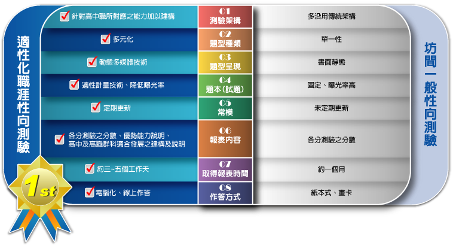
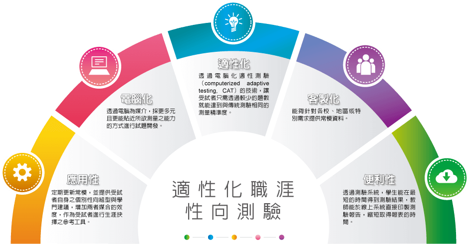

-
- 什麼是適性化職涯性向測驗?
- 性向測驗(aptitude test)是用來測量個人潛能的一種工具，多用在學生自我探索、生涯抉擇或企業篩選人才等。 然而，現有之性向測驗施測方式為紙本式測驗，計分方面需透過人力或是讀卡機制，在試題方面為固定試題。 但試題隨著使用年限增加而有試題曝光率之問題，且在題型與內容方面也未擴充或更新，導致性向測驗其試題老舊、題型受限， 未能發揮測量個人潛能之效果。因此結合電腦化、多媒體和計量技術編製「適性化職涯性向測驗」，透過計量與多媒體技術測量學生多面向之潛能。 透過本測驗，提供青少年瞭解其自身之優勢能力，將有助於學生探索與掌握自我，進而培養生涯決策與規劃能力。 適當的生涯發展測驗將能提供多元訊息，以作為青少年生涯決策之參考資訊，以及教師與家長進行生涯輔導之工具。

-
- 本測驗的特色與優勢
- 一、電腦化測驗
提升測驗編製者更新題目內容與題型之效率，並且利用資訊和多媒體技術發展新題型，以更真實測量學生之潛力。
二、新架構與新題型的開發
有別於過去測驗向度，新開發之測驗架構，融入高職類群與 高中所需之能力，並透過多樣化的題型，更真實的測量出所需之能力。
三、適性技術
透過電腦化適性測驗（computerized adaptive testing, CAT）的技術，讓受試者只需透過較少的題數就能達到與傳統測驗相同的測量精準度。
四、快速獲得測驗結果
透過測驗系統，學生能在最短的時間得到測驗結果，學校教師能於線上系統直接印製測驗報告，縮短獲得報表的時間。
五、全國常模定期更新
將有效的結果資料納入常模計算，定期更新常模，以確保測驗對個人分數的解釋力。
六、提供客製化常模
能夠針對各校、地區或特別需求提供常模資料。
七、提供學生高中與高職15群之配對
提供受試者自身之個別性向組型與類群建議，增加兩者媒合的效度，以作為受試者作為生涯抉擇之參考工具。
八、提供職涯相關測驗之整合型報表
除了本測驗既有之報表，若完成本系統之情境式職涯興趣測驗，則提供兩項測驗結果之整合型報表，藉此讓學生了解性向和興趣之間適配的情形，以全面性與整體性之訊息，作為學生進行生涯抉擇之參考資訊，也提供學校教師和家長，能做更適切之輔導或建議。

-
- 常模
- 本測驗施測對象為臺灣各公私立國民中學8年級之男女學生，抽樣母群乃根據教育部網站公布之98年國民中學學校名錄與各年級班級數， 抽樣方式係採分層隨機抽樣，先根據各縣市學校班級數，計算各縣市在全國所佔班級比率，以此比例制定各縣市的抽樣班級數目。 施測時間為民國99年4月中旬開始，至民國99年6月下旬結束。共計施測45間學校，總有效施測人數為3163人。 性別部分的分布是男生1635人（51.7%）、女生1528人（48.3%）。
-
- 研發與製作
-
信度本測驗以民國99年就讀八年級學生作為樣本，礙於人力與時間因素，先採北區學校作為代表，共計167人的測驗資料進行信度研究。 藉由分析軟體Conquest進行Rasch模式分析，求得各分測驗之期望估計標準誤與IRT之樣本層次信度指標。 信度研究之樣本比照正式測驗進行電腦化適性測驗，先以Rasch模式分析預試樣本並建立難度參數， 再根據施測樣本的答題反應立刻估計出其能力，並且挑選出適合該受試者能力的下一道試題讓受試者作答。 由於受試者所接受到的試題都很接近其能力水準，因此只要用較少的題數就可以達到與傳統測驗相同的測量精準度。 在各分測驗試題量為9~13題的情況下，信度介於0.53~0.79之間。
研究效度採國中八年級學生，共494名學生為樣本，以其民國99年施測之「多因素性向測驗分數」作為效標分數。 效標樣本分佈於北區288人、中區87人與南區119人。各分測驗與多因素性向測驗之相關介於0.12~0.50。 同時也採取976名學生「國文、數學、理化與美術科在校學科成績」作為效標樣本，樣本分佈於北區417人、中區224人與南區335人。 各學科在校成績分別與語文、數學、科學推理與美感測驗之相關0.23~0.55之間。
研究
-
- 研發與製作
- 版權所有人：宋曜廷教授
由國立臺灣師範大學心理與教育測驗研究發展中心及數位學習研究室共同開發。